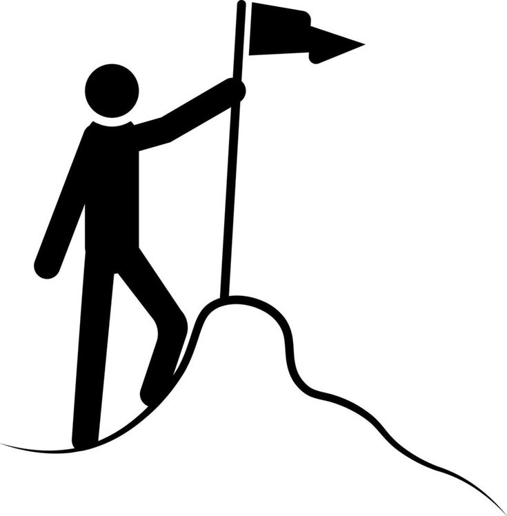

Your Main Focus
Finish these tasks first to win your day.

You have no event for the day, try something by adding a task!
Stay calm. Focus on what matters.
Finish these tasks first to win your day.

You have no event for the day, try something by adding a task!